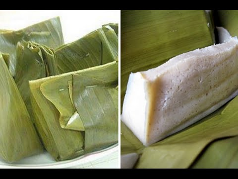

Kembali ke menu awal
Barongko

Barongko merupakan makanan khas Bugis-Makassar yang terbuat dari pisang yang dihaluskan, telur, santan, gula pasir, dan garam.
Kemudian dibungkus daun pisang lalu dikukus. Jika sudah matang, dimasukkan ke dalam kulkas.
Dahulu, Barongko disajikan sebagai hidangan penutup bagi para raja Bugis.
Selain itu juga sering disajikan saat acara adat seperti sunatan, akikah, pernikahan, syukuran dan lain sebagainya.
Hingga kinipun Barongko masih biasa disajikan saat pesta adat. Selain itu pula, Barongko masih dapat dijumpai ketika bulan Ramadhan sebagai menu untuk berbuka puasa.
Untuk membuat Barongko ini haruslah dikerjakan oleh orang yang sudah berpengalaman.
Dengan tujuan untuk mempertahankan kualitas rasa dan kelezatan yang khas dari Barongko. Karena itulah Barongko tidak mudah dijumpai di pasaran.
Sumber: Wikipedia
Kembali ke menu awal